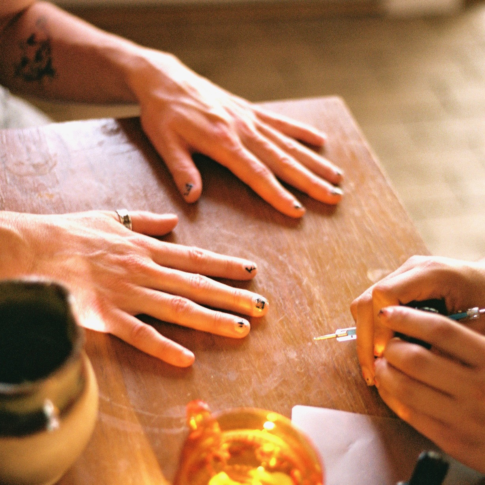
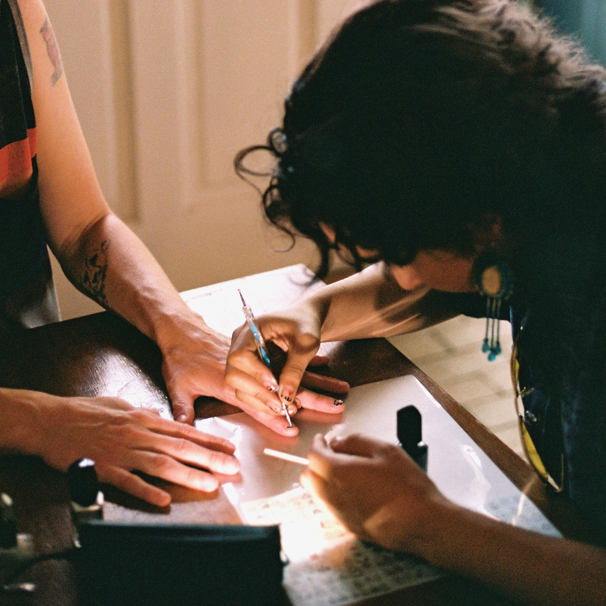

Albuquerque's own
One Stop Shop


I've been doing my nails for about a year now. I enjoy doing abstracted designs and motifs. I figure, we use our hands a lot, why not make them beautiful?
I use nail polishes and not gels and I do not do complex nail art. All of my nail polishes are from companies that are 10 toxin free, meaning they are free of harsh chemicals such as toluene, camphor, formaldehyde, formaldehyde resin and DBP (dibutyl phthalate).